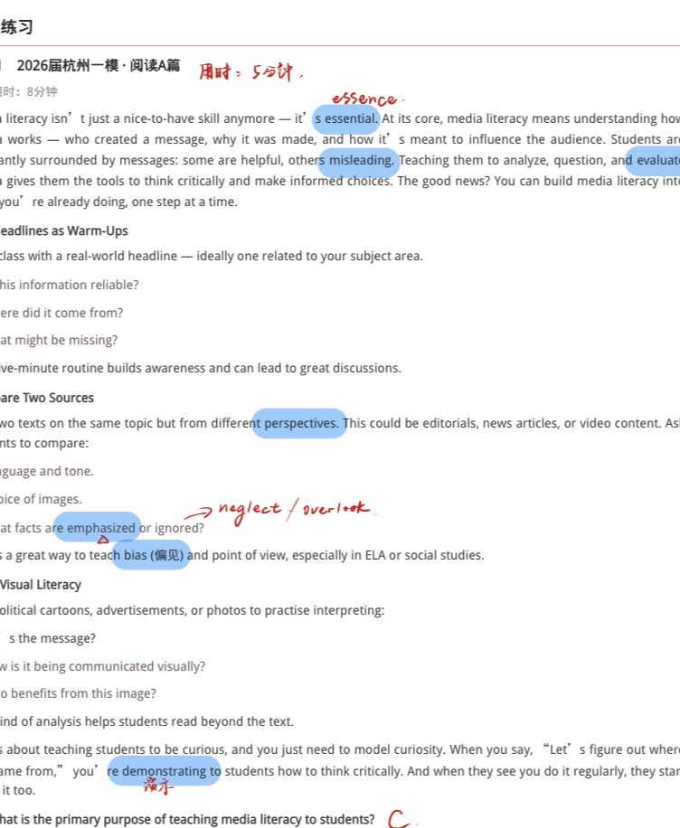
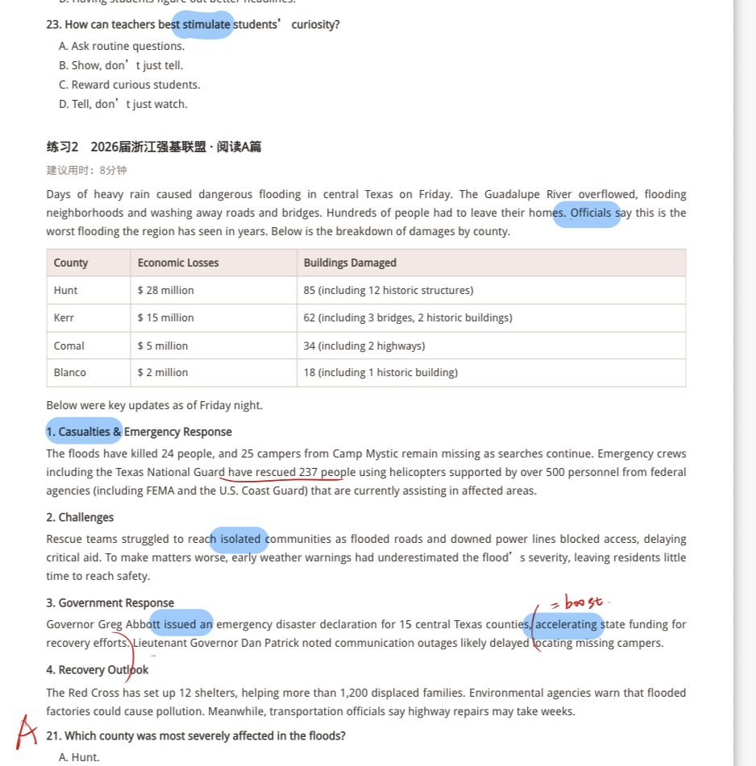
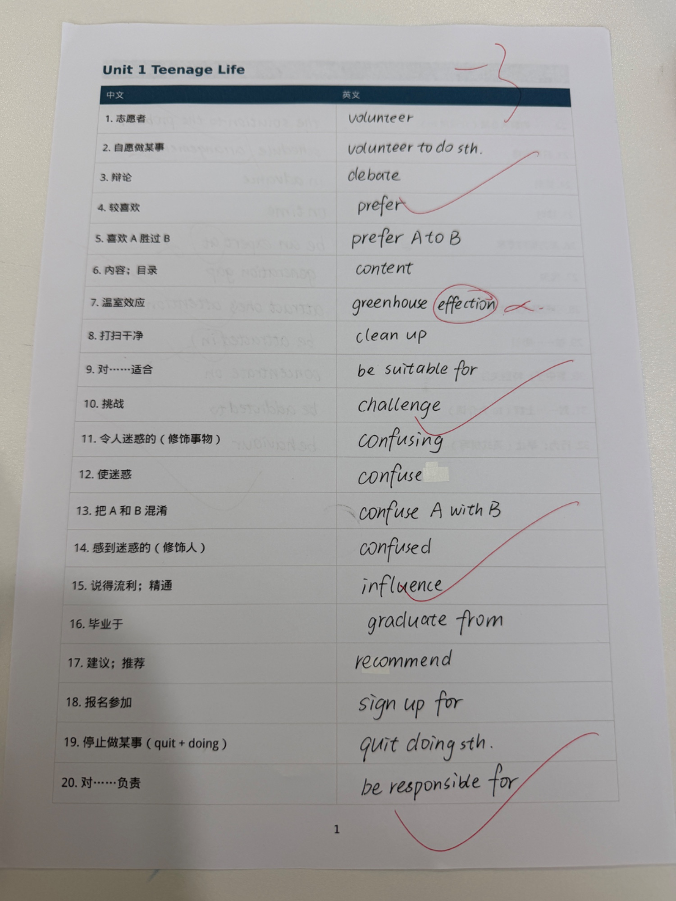
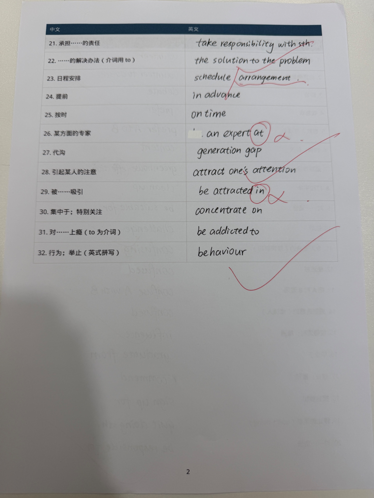
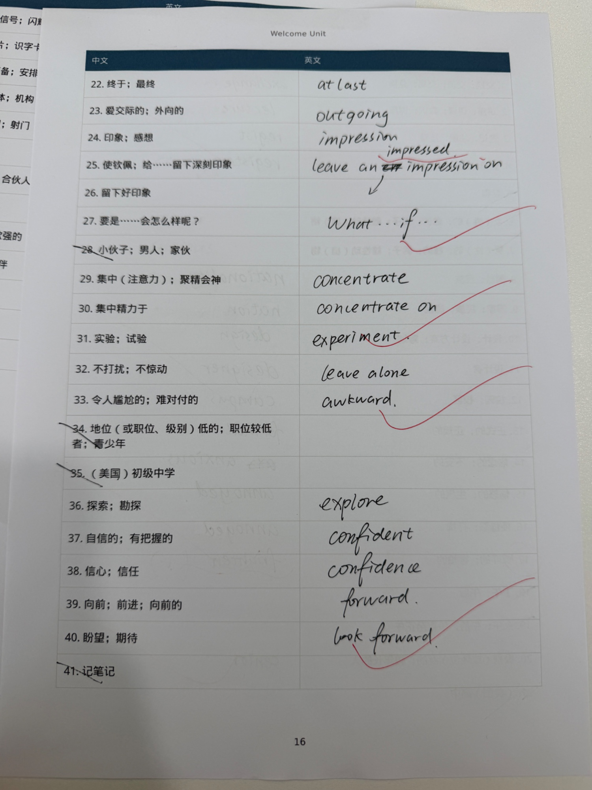

今日课堂反馈
一、语法：名词性从句 that / what · whether / that
总原则：先看从句缺不缺成分，再看语义是“确定事实”还是“是否”。
1. that 和 what —— 缺不缺成分
| 词 | 在从句中的作用 | 判断方法 | 典型句 |
|---|---|---|---|
| that | 纯连词，不作成分 | 把 that 拿掉，从句仍是完整陈述句 | I know that he is honest. |
| what | 连接代词，必须作成分 | 从句里缺“什么东西 / 什么事” | I know what he wants. |
that 的注意点
- 宾语从句中常可省略：I think (that) ...
- 主语从句句首、同位语从句、并列第二个 that：不可省
- 不能直接放在介词后（要用 the fact that）
what 的注意点
- what = the thing(s) that，已包含先行词
- 不引导定语从句（定语从句用 that / which / who）
- What he said is true. / This is what I want.
自测：① The problem is ____ we do not have enough time. → that ② ____ we need is more practice. → What
2. whether 和 that —— 是否 vs 事实
| 语境 | 用词 | 信号词 / 场面 | 例子 |
|---|---|---|---|
| 陈述事实、转述确定信息 | that | know, believe, hear, say, report, the fact, it is clear | Officials say (that) this is the worst flooding... |
| 不确定、二选一、询问 | whether | wonder, ask, not know, doubt, depend on, the question is | I wonder whether the warning was accurate. |
| 介词后 / 句首 / 与 or not 连用 | whether（不用 if） | on, of, about；句首；whether or not | Whether he comes or not does not matter. |
和今天阅读挂钩
新闻导语 Officials say this is the worst flooding 是官方定性，当作已发生的事实转述，所以是 that 从句（可省 that）。
若救援还没结论：Rescuers are not sure whether the 25 campers are still alive.
doubt 的固定搭配
I doubt whether he will come.（怀疑是否会来）
I do not doubt that he will come.（确信他会来）
There is no doubt that ...（毫无疑问这一事实）
whether vs if：口语宾语从句里常可互换；但介词后、句首、to do 前、or not 紧跟只用 whether。
二、阅读理解十四词
今天精读圈出的 14 个词，考试里既是词汇分也是定位词。练习1 杭州一模 8 个，练习2 强基联盟 6 个。
练习1 2026届杭州一模 · 阅读A篇 8词
| 单词 | 词性与意思 | 本篇用法 |
|---|---|---|
| essential | adj. 必不可少的（名：essence 本质） | Media literacy is essential. |
| misleading | adj. 误导人的 | some messages are helpful, others misleading |
| evaluate | v. 评估 | analyze, question, and evaluate |
| perspectives | n. 视角；立场 | two texts from different perspectives |
| emphasized | v. 强调（近义 ignore ≈ neglect / overlook） | What facts are emphasized or ignored? |
| bias | n. 偏见 | teach bias and point of view |
| demonstrating | v. 示范；证明 | you are demonstrating how to think critically |
| stimulate | v. 激发 | How can teachers best stimulate curiosity? |
练习2 2026届浙江强基联盟 · 阅读A篇 6词
| 单词 | 词性与意思 | 本篇用法 |
|---|---|---|
| Officials | n. 官员（官方人士） | Officials say this is the worst flooding... |
| Casualties | n. 伤亡人员 | 1. Casualties & Emergency Response |
| isolated | adj. 被隔绝的 | struggled to reach isolated communities |
| issued | v. 颁布；发布 | Governor ... issued an emergency disaster declaration |
| accelerating | v. 加快（= boost） | accelerating state funding for recovery |
| locating | v. 定位；找到（delay doing） | outages delayed locating missing campers |
三、默写词汇：错点 / 注意
今天默写里要单独记住的三处。词性、介词绑在一起背，不要只背中文。
| 正确形式 | 注意 |
|---|---|
| greenhouse effect |
effect 是名词（效果、效应）；affect 是动词（影响）；affection 是喜爱。 没有 effection 这个词。温室效应 = greenhouse effect。 例：The greenhouse effect affects the climate. / He has a deep affection for his hometown. |
| an expert in sth |
某方面的专家固定用 expert in。 不要写成 expert at（课上已圈出）。例：She is an expert in biology. |
| be attracted to do |
被……吸引 / 被吸引去做：be attracted to do。 不要写成 be attracted in。例：Students are attracted to do volunteer work. |
四、课堂原件
以下为今日讲义与词汇表拍照，便于对照批注位置。







五、阅读技巧：细节理解题
细节题不靠“感觉”，靠定位 + 同义替换 + 排除干扰。按下面三个技巧做，每题大约 20 秒。
技巧1：关键词定位法
操作三步走
- 圈词（3秒）：读题干，圈 1–2 个最独特的定位词。
- 扫读（10秒）：回原文快速找定位词及其同义词。
- 比对（5秒）：在定位句前后 1–2 句范围内比对选项。
今天第21题 Which county was most severely affected？定位词是专有名词 + 比较级，不是 flood。表中 Hunt $28 million / 85 buildings 最高 → A.
技巧2：同义替换识别
| 类型 | 说明 | 示例 |
|---|---|---|
| 同义词替换 | 原文词换成同义词 | essential → crucial |
| 句式转换 | 主动 ↔ 被动、条件 ↔ 结果 | Nava developed AI → AI was developed by Nava |
| 归纳概括 | 具体描述 → 抽象概括 | rescued 237 people → efficiency in processing data |
技巧3：干扰项排除法
| 干扰类型 | 特征 | 怎么识别 |
|---|---|---|
| 偷换概念 | 主语 / 宾语被替换 | 逐项比对主谓宾 |
| 无中生有 | 原文完全没提 | 回原文找依据 |
| 扩大范围 | some → all，may → will | 注意绝对化词汇：always, never, all, only |
| 张冠李戴 | A 做的事安到 B 头上 | 标注每个选项对应的主体是谁 |
排除顺序：先排无中生有 → 再排偷换概念 → 最后比对剩下的。